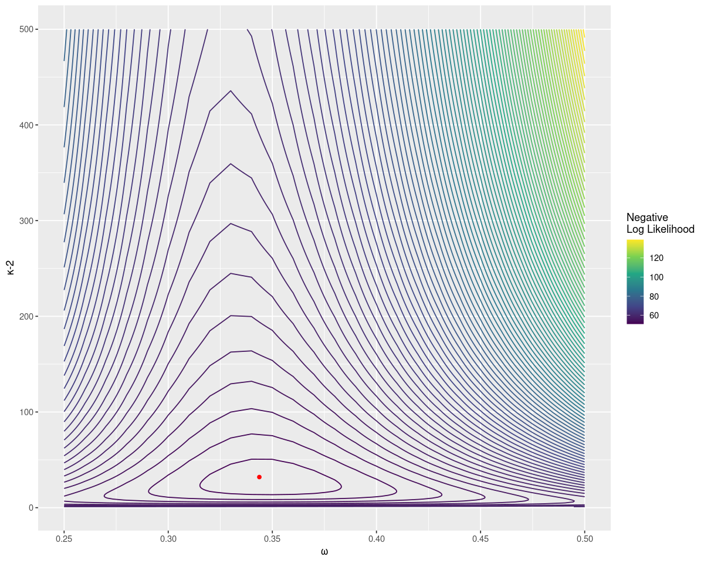

Pooling Proportions with Empirical Bayes
Calculating binomial proportions by group is inherently noisy for small groups. The standard deviation for a group is \(\sqrt{\frac{p(1-p)}{N}}\), where \(p\) is the true proportion of the group and \(N\) the size of the group. The numerator is always at least as large as the distance to 0 or 1, so for small \(N\) the uncertainty is very large relative to the measurement. The resolution of the measurement is at most \(1/N\); with \(N=2\) the only possible outcomes are 0%, 50% or 100%. Because of this in rankings the small groups are always near the top and the bottom.
There is a better way to calculate binomial proportions by pooling information across groups. Given the conversion rate over several channels, we know something about the conversion rate for a new unseen channel. The rates of each group can be considered a distribution, and modelled as a hierarchical model. Then a new group starts near the centre of this distribution, and as more data on the group is collected it moves towards the independent group average. The small groups are all pulled to the centre of the distribution, away from the edges of the ranking.
For a binomial distribution the conjugate prior is the beta distribution, which seems like a reasonable start. We could estimate this distribution with standard Bayesian computational techniques such as Markov Chain Monte Carlo, but we can analytically reduce the likelihood into something that can be computed directly. The maximum likelihood estimate (or any other estimate) can be plugged in and the group averages estimated, an Empirical Bayes approach.
Model and Group Estimates
The data is from m groups, with group \(i\) containing \(N_i\) dichotomous outcomes of which \(k_i\) are positive. The group is modelled as a binomial with probability \(\theta_i\), which is the group average we are trying to infer. The groups probabilities are modelled as a Beta distribution where the parameters \(\alpha\) and \(\beta\) are to be inferred.
\[\begin{align} \theta_i & \sim {\rm Beta}(\alpha, \beta) \\ k_i & \sim {\rm Binomial}(N_i, \theta_i) \; \forall i=1,\ldots,m \end{align}\]
Given \(\alpha\) and \(\beta\) the posterior estimates are
\[\hat{\theta}_i = \frac{k_i + \alpha - 1 }{N_i + \alpha + \beta - 2}\]
That is the prior is effectively starting at \(\alpha+\beta-2\) outcomes, of which \(\alpha-1\) are positive and \(\beta-1\) are negative. This standard notation is asymmetrical; using the sample strength \(\kappa = \alpha + \beta\) it’s a more symmetrical (but still plagued by off-by-one adjustments).
\[\hat{\theta}_i = \frac{k_i + \alpha - 1 }{N_i + \kappa - 2}\]
In fact it can be seen as a weighted average of the group average and the prior average from the Beta distribtuion. The direct estimate of probability is \(p_i = k_i/N_i\), and the mode of the Beta function is \(\omega = \frac{\alpha-1}{\kappa-2}\) (for \(\kappa > 2\)). Then
\[\hat{\theta}_i = \frac{N_i p_i + (\kappa - 2) \omega }{N_i + (\kappa - 2)}\]
Estimating the Beta Distribution
Any estimate of the Beta Distribution will work. Probabilaball has an example with code of using the method of moments estimator (there’s also a brief example in Casella’s An Introduction to Empirical Bayes Data Analysis). However the maximum likelihood estimator has many nice properties, and examining the likelihood shows the sensitivity to the parameters.
We want to find the dependence of the binomial outcomes on the hyper-priors \(\alpha\) and \(\beta\) alone. For now just consider one group and drop the group index for simplicity. From our distributional model assumptions we have the following probability distributions:
\[\begin{align} P(\theta \vert \alpha, \beta) &= \frac{\theta^{\alpha-1}(1-\theta)^{\beta-1}}{B(\alpha, \beta)} \\ P(k \vert N, \theta) &= {N \choose k} \theta^{k}(1-\theta)^{N-k} \end{align}\]
We can easily simulate a distribution in R; I find it useful for explicitly checking the calculations
# Sample data
a <- 10 # alpha
b <- 20 # beta
N <- 5 # Number of Trials
nsim <- 10000 # Number of simulations
k <- 0:N # All possible values of positive outcomes
theta <- rbeta(nsim, a, b)
k_sim <- rbinom(nsim, N, theta)
# Simulated probability distribution
psim <- table(k_sim)/length(k_sim)
# 0 1 2 3 4 5
# 0.1463 0.3227 0.3060 0.1641 0.0535 0.0074We can obtain the marginal distribution by integrating out \(\theta\) using the law of total probability, and simplifying with conditional independence. This can be done for a wide range of models, called Conditionally Independent Hierarchical Models, see also the derivation for a hierarchical normal distribution with known variance
\[\begin{align} P(k \vert \alpha, \beta, N) &= \int_0^1 {\rm{d}\,\theta} P(k \vert \alpha, \beta, N, \theta) P(\theta \vert \alpha,\beta, N) \\ &= \int_0^1 P(k \vert \theta, N) P(\theta \vert \alpha,\beta) {\rm{d}\,\theta} \end{align}\]
integrand <- function(k) function(theta) {dbinom(k, N, theta) * dbeta(theta, a, b)}
pnumeric <- vapply(k, function(x) integrate(integrand(x), 0,1)$value, double(1))
# These should be about the same and give a ratio close to 1
pnumeric / psim
# 0 1 2 3 4 5
# 1.0440972 0.9861547 0.9947580 1.0117864 0.9605892 0.9722721This integral can be evaluated analytically using the Beta function
\[\begin{align} P(k \vert \alpha, \beta, N) &= {N \choose k} \frac{1}{B(\alpha, \beta)} \int_0^1 \theta^{k+\alpha-1} (1-\theta)^{N-k+\beta-1} {\rm{d}\,\theta} \\ &= {N \choose k} \frac{B(k+\alpha, N-k+\beta)}{B(\alpha, \beta)} \end{align} \]
z <- 0:N
panalytic <- choose(N, k) * beta(k+a, N-k+b)/ beta(a,b)
#
panalytic/psim
# Ratio is close to 1
# 0 1 2 3 4 5
#1.0440972 0.9861547 0.9947580 1.0117864 0.9605892 0.9722721This is numerically unstable; the Beta function evaluates to very small numbers. It is much better to work in the logarithmic scale.
logp <- lchoose(N,z) + lbeta(z+a, N-z+b) - lbeta(a,b)
exp(logp)Going from one to multiple groups just requires multiplying together all the likelihoods, or equivalently summing the log likelihoods.
Maximum Likelihood Estimates
To show how to obtain the maximum likelihood estimates let’s use a simulation with 14 groups.
set.seed(6011)
a0 <- 10
b0 <- 20
m <- 14
Ns <- round(10^(runif(m, 1, 2.7)))
Ns
# 20 30 299 21 22 249 35 133 58 247 51 73 312 479
theta <- rbeta(m, a0, b0)
theta
# 0.247 0.456 0.255 0.290 0.321 0.313 0.343
# 0.360 0.284 0.384 0.294 0.380 0.528 0.286
ks <- rbinom(m, Ns, theta)
ks
# 85 109 8 152 46 8 55 12 9 27 84 12 23 14For a given set of k and N we can calculate the negative log likelihood as above:
negloglik <- function(a,b) {
-sum(lchoose(Ns,ks) + lbeta(ks+a, Ns-ks+b) - lbeta(a,b))
}Since there are only two parameters we can do a brute force search. I find it easier to think about in terms of the mode \(\omega\) and strength \(\kappa\), or \(\tau = \kappa - 2\).
omega <- seq(0, 1, by=0.01)
tau <- seq(1,500,by=1)
omega <- rep(omega, times=length(tau))
tau <- rep(tau, each=length(omega)/length(tau))
a <- omega * tau + 1
b <- (1-omega) * tau + 1
# ll for log likelihood
system.time ({ ll <- mapply(negloglik, a, b) })
idx = which(ll == min(ll))
c(omega[idx], tau[idx], a[idx], b[idx])
# 0.35 27.00 10.45 18.55Brute force searching gives an estimate close to the original parameters. It also allows us to plot the distribution easily, with the true value as a point in red. Notice that the negative log likelihood increases fast as \(\omega\) gets far from the true value, but relatively slowly for larger sample strengths.

A more efficient way of finding the maximum is to find the zero of the derivatives of the negative log likelihood in terms of the digamma function:
\[\begin{align} \frac{\partial l}{\partial \alpha} &= \sum_{i=1}^{m} \psi(k_i + \alpha) - \psi(N_i + \alpha + \beta) + \psi(\alpha + \beta) - \psi(\alpha)\\ \frac{\partial l}{\partial \beta} &= \sum_{i=1}^{m} \psi(N_i - k_i + \beta) - \psi(N_i + \alpha + \beta) + \psi(\alpha + \beta) - \psi(\beta)\\ \end{align} \]
Or in code the derivatives of the negative log likelihoods are:
d_nll_by_a <- function(a,b) {
-sum(digamma(ks+a) - digamma(a) + digamma(a+b) - digamma(Ns+a+b))
}
d_nll_by_b <- function(a,b) {
-sum(digamma(Ns-ks+b) - digamma(b) + digamma(a+b) - digamma(Ns+a+b))
}It seems there’s a unique global maximum and we can solve for it numerically. For an initial estimate use that the mean of the distribution is approximately the mean of the groups, and the variance is approximately the variance of the groups. These can then be rearranged to get \(\alpha\) and \(\beta\) (see the article on the beta distribution for details). For our starting point we can use a rough approximation.
initial_guess <- function(Ns, ks) {
mu <- mean(ks/Ns)
k <- p0*(1-p0)/var(ks/Ns)
c(mu*k, (1-mu)*k)
}
initial_guess(ks, Ns)
# 5.538467 9.011807Then the package rootSolve can be used to quickly find the minimum. A quick check shows this is lower than any value found in the grid search.
r <- rootSolve::multiroot(
function(x) c(d1=d_nll_by_a(x[1], x[2]),
d2=d_nll_by_b(x[1],x[2])),
start=initial_guess(Ns, ks))
# $root
# [1] 10.31818 18.43713
#
# $f.root
# d1 d2
# 1.602294e-07 -1.824109e-07
#
# $iter
# [1] 6
#
# $estim.precis
# [1] 1.713201e-07Ideally all this would be wrapped up in some library that makes this easy to use. This is a better default for calculating group proportions than the simple average.
We can then put this estimate to improve the raw estimate \(p=k/N\) to \(\hat{p} = \frac{k+\alpha-1}{N+\alpha+\beta-2}\).
ahat <- r$root[1]
bhat <- r$root[2]
df <- data.frame(theta,Ns,ks,p=ks/Ns,phat=(ks+ahat-1)/(Ns+ahat+bhat-2))
df$p_error <- df$theta - df$p
df$phat_error <- df$theta - df$phat| theta | Ns | ks | p | phat | p_error | phat_error |
|---|---|---|---|---|---|---|
| 0.25 | 392 | 85 | 0.22 | 0.23 | 0.03 | 0.02 |
| 0.46 | 250 | 109 | 0.44 | 0.43 | 0.02 | 0.03 |
| 0.26 | 14 | 8 | 0.57 | 0.42 | -0.32 | -0.17 |
| 0.29 | 471 | 152 | 0.32 | 0.32 | -0.03 | -0.03 |
| 0.32 | 121 | 46 | 0.38 | 0.37 | -0.06 | -0.05 |
| 0.31 | 18 | 8 | 0.44 | 0.39 | -0.13 | -0.07 |
| 0.34 | 141 | 55 | 0.39 | 0.38 | -0.05 | -0.04 |
| 0.36 | 39 | 12 | 0.31 | 0.32 | 0.05 | 0.04 |
| 0.28 | 35 | 9 | 0.26 | 0.30 | 0.03 | -0.01 |
| 0.38 | 72 | 27 | 0.38 | 0.37 | 0.01 | 0.02 |
| 0.29 | 326 | 84 | 0.26 | 0.26 | 0.04 | 0.03 |
| 0.38 | 20 | 12 | 0.60 | 0.46 | -0.22 | -0.08 |
| 0.53 | 42 | 23 | 0.55 | 0.47 | -0.02 | 0.06 |
| 0.29 | 63 | 14 | 0.22 | 0.26 | 0.06 | 0.03 |
Notice that the error is much smaller for \(\hat{p}\) when \(N\) is small. In particular the most extreme value of p, when N=20, gets shrunk down closer to the true value. The RMSE for \(\hat{p}\) is 0.05, much smaller than the RMSE for \(p\) of 0.18.
This should be the default way of calculating proportions. David Robinson has provided the ebbr R package, but the python port needs some work. Ideally this would be easily available in more languages and SQL engines, along with a similar facility for the mean (and other statistics).
Some other good explanations on these kinds of methods are from Damien Martin and David Robinson (in fact David has a whole book on the subject).